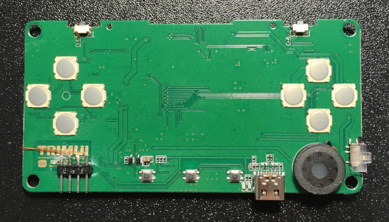
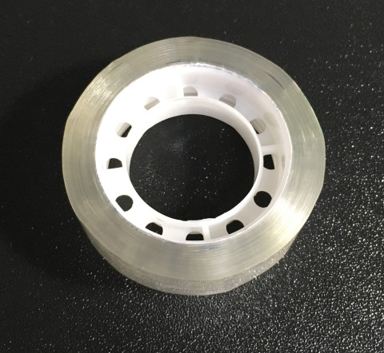
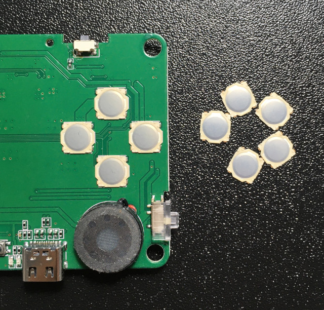
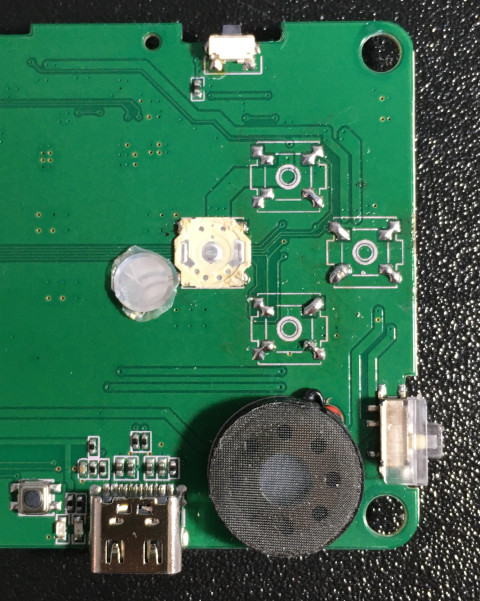
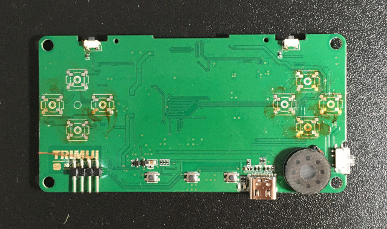
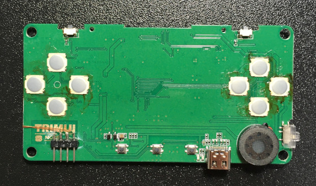
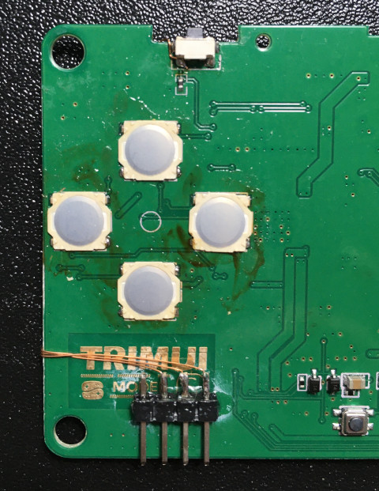
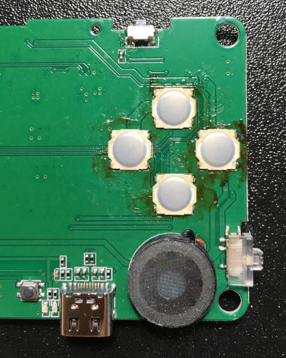

Steward
分享是一種喜悅、更是一種幸福
掌機 - TRIMUI - 更換按鍵
說實話，這按鍵真是太吵了！於是，再度激起司徒替換按鍵的動力

在替換之前，司徒想起一般鍋仔片都會使用特殊膠布固定，除了固定位置之外，這種特殊膠帶也會適時降低雜音，當然也可以提供適當的回饋力道，但是，司徒目前沒有這樣的膠帶，於是只好使用普通膠帶測試，事實證明，這種普通膠帶並不適用，可能是厚度不夠，彈力也不夠好

於是司徒找來了一些尺寸一樣的按鍵

原本按鍵

在沒有熱風槍的協助下，真是有夠累的...

接著替換按鍵，在替換按鍵之前，建議使用原本的導電膠測試聲音，測試後再焊接替換，因為司徒發現按鍵品質不一定一樣，有的很吵，有的很安靜

替換完成後，司徒的按鍵已經安靜許多了，終於，上廁所時，可以好好把玩遊戲了！不過其它非鍋仔片的按鍵，還是一樣吵...

